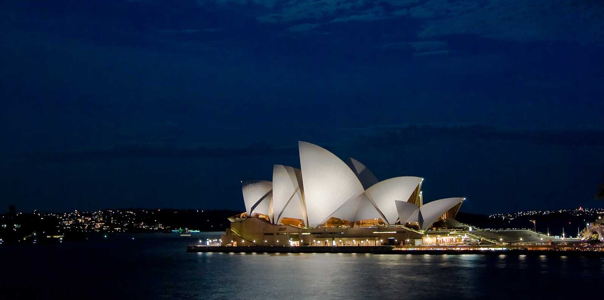

Syndey Opera House Photo Gallery
Exterior
 Sydney Opera House Reflecting off the Sydney Harbor [Fig 2]
During the day the pearly white "shells" of the Sydney Opera House vibrantly protrude out of the water as if they were exposed clams at low tide.
Sydney Opera House Reflecting off the Sydney Harbor [Fig 2]
During the day the pearly white "shells" of the Sydney Opera House vibrantly protrude out of the water as if they were exposed clams at low tide.
Syndey Opera House Materials[4]
Reinforced Concrete (Structure)
Polarized Glass (Façade)
Steel Frames (Façade)
White and Cream Matte Tiles (Shells)
Pink Granite (Interior)

The Sydney Opera House Illuminated at Night [Fig 3]
The cream white shells of the Sydney Opera House starkly contrast the darkening night sky.
Interior
 A Fully Packed Syndey Opera House Before a Performance[Fig 4]
The massive scale of the House's interior makes the performance seem all the more impressive and the massive crowd seem almost like a small gathering.
A Fully Packed Syndey Opera House Before a Performance[Fig 4]
The massive scale of the House's interior makes the performance seem all the more impressive and the massive crowd seem almost like a small gathering.
Google Earth
 The Syndey Opera House is at the outskirst of a very Urban envrionment. It is located right outside the city and it sits right at the edge of the shore. The positioning of this building makes
it seem as more of a natural part of the aquatic envrionment as the building loosely resembles common sea mollusks.[Fig 5]
The Syndey Opera House is at the outskirst of a very Urban envrionment. It is located right outside the city and it sits right at the edge of the shore. The positioning of this building makes
it seem as more of a natural part of the aquatic envrionment as the building loosely resembles common sea mollusks.[Fig 5]
Flickr Slides